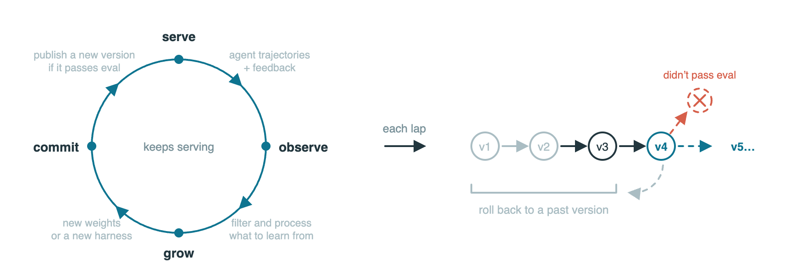

reef
An AI agent's own on-the-job training: every real answer becomes a lesson, instead of being thrown away the moment it's given.
Point your AI agent's questions through Reef and every correction, thumbs-down or failed test becomes practice: Reef builds a better version of the agent and tests it before it replaces the old one.

How does it work?
Your AI agent answers the same way today as it did on day one. Every real conversation holds lessons - a correction, a thumbs-down, a failed test - but normal setups throw all of that away the moment they answer.
Asking a big AI company's model to grade or fix its own mistakes still costs money every single time, and nothing carries over to tomorrow.
Every time your app or agent would normally ask the AI model a question, it asks through Reef instead.
You start Reef pointed at a model you already use - your own computer running Ollama, or a hosted one - and it quietly begins keeping a record.
The question itself, plus whatever feedback shows up afterward: a thumbs up, a correction, a passed or failed test.
Reef's own tutorial: ask an AI to fix a bug in a small file (a sum function that "stops one short"), first writing a test that fails, then fixing it, then having a second AI check the fix.
It answers like normal, then works through the feedback in stages to build and check a better version.
- Answers the question and tags that exact exchange with a receipt number, so feedback about it can be found later
- Matches any feedback you send back to the right receipt
- Turns matched examples into a candidate improvement - either to the model itself (needs a graphics card) or to the agent's own instructions (Reef's free Reefine option, no graphics card needed)
Reefine's own demo also tries a research question - "what is the best known lower bound for sorting by comparisons, with a source?" - and checks whether the agent actually found real sources.
A checked, versioned improvement, not just a pile of logs.
- A candidate update that's scored against the version it would replaceOnly a candidate that clears the bar gets published; the rest are thrown away automatically
- A score for every proposed changeEach candidate is tested against the version it would replace before anything is published
- Older versions kept on handSo you can go back to an earlier version if a new one turns out worse
What changes for me?
Without it
- A wrong answer or a bad call gets logged somewhere, and forgotten. Tomorrow the agent makes the same mistake.
- Turning feedback into a smarter agent means a separate, multi-week project: pull the logs, build a training set, retrain, test, and carefully roll it out.
- If the new version turns out worse, there's no clean way back to the old one.
With it
- Every answer can carry a receipt; when feedback comes in, it finds its way back to the exact question it was about, automatically.
- A built-in option (called Reefine) rewrites the agent's own instructions from that feedback using a plain model connection - no graphics card needed. A heavier option retrains the model itself, which does need a graphics card.
- Every candidate is checked against the version it would replace before anything changes, and older versions stay on hand to go back to.
How hard is it to try?
Effort
- Skim the four-stage idea and the ready-made options on Reef's own documentation site - nothing to install yet.
- A developer installs it with one line and follows the quickstart guide to point it at a model they already have and watch it record its first request.
- To see it actually produce an improvement, run the built-in Reefine tutorial, which walks through a real bug fix end to end using a plain AI connection - no graphics card needed.
What it takes on your computer
- Space on disk
- About 10 MB for Reef itself (the reef-infra package on PyPI: a 1.2 MB pre-built copy plus an 8 MB source copy). It calls out to a model that lives somewhere else, so nothing else downloads unless you turn on the option that retrains a model's own weights, which needs extra software (SGLang, Slime) with no published size.
- Memory while it runs
- no data found for the basic setup. Reef's docs give no memory number; they only say retraining a model's weights needs a graphics-card server, without saying how much memory that server needs.
- Runs on
- A Mac, Windows or Linux computer with Python 3.12 or newer. No graphics card needed for the free option (Reefine) or for just recording and serving answers; a graphics card is only needed if you retrain a model's actual weights.
Paste this into Claude Code. It runs your safety scan first, then a 10-minute test.
/skillspector https://github.com/Human-Agent-Society/reef If that scan passes: in a scratch folder, install reef (pip install reef-infra), follow the README's quickstart to point it at a model you already have, send it one sample request, and show me what comes back (the answer plus its receipt header). 10 minutes max, then stop and report back in plain English.
Should I?
Great if you...
- You're building or running an AI agent that makes the same kind of call over and over, and you want it to improve from real feedback instead of staying frozen
- You'd rather rewrite your agent's own instructions for free (no graphics card) than pay to retrain a model, at least to start
Skip it if...
- You just want to use an AI agent, not build one - there's nothing here for a non-coder to click on
- It needs to work well today, out of the box: it's about a month old, and in its own recorded test run none of the proposed fixes cleared the evaluation bar on their own - they were published only because that run used a testing setting that publishes everything
- You want to retrain a model's actual weights: that path needs a graphics-card server this setup doesn't include
Instead, you could look at
- SkillOptAlso rewrites an agent's own instructions from scored feedback, but only that one piece - it doesn't run the serving connection or collect feedback from production the way Reef does.
Is it safe?
- Security advisories: 0GitHub's advisory list, checked Sep 27
- Searches for CVEs, vulnerabilities, malware and scams20 results read, including the national CVE database: nothing found
- Are the stars earned?6.3K stars, 32 contributors, 370 commits. findarepo's star check: 100 out of 100, "nothing unusual across the checks we ran" (fork-to-star ratio, issue activity, growth pace versus age, repo completeness), as of Sep 27.
Watch out for
- A month old, and still finding its shape. Reef's repository was created August 31, 2026. Commands, settings and even the four-stage design could still change.
- In its own recorded test run, nothing actually passed on merit. Reef's tutorial reports 10 proposed fixes and 0 that cleared the evaluation bar - all 10 were published anyway only because that run used a testing setting that publishes everything regardless.
- Out of the box, it does nothing but record. Reef's own docs say that without turning on a real learning option, "the chain will stay at one: this deployment's recipe is the core recipe, which records and trains nothing."
- Retraining the model itself needs a graphics-card server. The free, no-graphics-card option (Reefine) only rewrites the agent's own instructions, not the model.
Who's using it, and for what?
It's about 4 weeks old (created August 31, 2026). What's been written about it so far covers the launch and the team behind it, not yet a named person or team using it for a specific job - so there's nothing real to report here yet.
We couldn't find anyone describing real use of it yet. That's normal for a brand-new repo, and it's worth knowing.
Who's talking about it
- BlogAo Qu and collaborators open-source Reef for learning from live agent interactions
- NewsletterHuman-Agent-Society/reef - GitHub launch roundup
- TrendshiftHuman-Agent-Society/reef hits #3 Python repo of the day
Sources
- Human-Agent-Society/reef on GitHub (README, releases, tutorials), Sep 27
- Reef homepage (reefinfra.ai), Sep 27
- Reef docs: Getting Started intro, Sep 27
- Reef docs: Quickstart - serve inference and report feedback, Sep 27
- Reef docs: install on a laptop or GPU server, Sep 27
- Reef docs: Reefine recipe, Sep 27
- Reef's Reefine tutorial (bug-fix and research demos, recorded measurements), Sep 27
- reef-infra on PyPI (package size), Sep 27
- Reef's GitHub Releases (version 0.1.1), Sep 27
- findarepo: reef's star growth and star check, Sep 27
- RuntimeWire: Ao Qu and collaborators open-source Reef, Sep 15
- The Daily Commit: Human-Agent-Society/reef launches on GitHub, Sep 4
- Trendshift: Human-Agent-Society/reef trending, Sep 27
- microsoft/SkillOpt on GitHub (named as an alternative), Sep 27